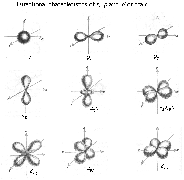

Mineral magnetism and it applications to geology.
1. Mapping - magnetic anomaly surveys are used for geologic mapping and they are a tool for ore deposit prospecting.
2. Plate Tectonics - paleomagnetism is the principle field of study that has helped place the positions of continents and ocean floors through time.
3. Stratigraphy - magneto-stratigraphy helps the correlation of sedimentary beds in basins and constrain sedimentation rates.
4. Mineral Processing - magnetic properties of minerals can be exploited during ore processing to help separate/beneficiate minerals.
Magnetic properties originate from the spin properties of electrons.
Recall electron orbital configurations can be described by quantum mechanics.
Where, n = volume, I = shape, m = orientation, s = spin directions. The figure below shows the directional characteristics (I) of the first three electron shape regions.

Pauli exclusion principle - no two electrons in an orbital can have the same four quantum properties. This effectively limits each orbital to only two electrons.
The spin properties of electrons that surround atomic nuclei are responsible for magnetic properties of a mineral. Each electron has the property of spin. Because an electron is charged, as it spins, it creates a magnetic field. This is somewhat analogous to creating a magnet by letting electrons flow through coiled wire. i.e., the movement of an electric field results in a magnetic field. The magnet is a dipole and possesses a magnetic moment and is given as a charge (amps) per area m2. Units of magnetic moments are defined as Bohr magnetrons. 1 mB = 9.27 x 10-24 Am2.
Most minerals have no obvious response to an applied magnetic field. This is because the electron orbitals of atoms occur with electron pairs, each with opposite spins. Each electron possesses a quantum property value of spin with values of either +1/2 or -1/2 (i.e., one pole up, the other down). The arrangement of the electrons in the same orbital within a crystalline mineral structure results in a nullifying (or enhancement) of the magnetic moments. The degree to which these interactions occur result in different types of intrinsic magnetism.
Hund's Rule: electrons occupying multi-orbital sites will maximize their spin (i.e. all electrons spin in the same direction as they fill orbitals and before any pairing of electrons with opposite spin).
Materials are referred to as diamagnetic if they have an extremely weak negative response to a magnetic field. These materials are defined by their mass susceptibility (Xg = a measure of samples interaction with an applied field) when Xg < 0).
If the magnetic moments cancel each other out, then the magnetic induction (i.e. interaction with an external field) is less than the applied field.
How strong is a magnetic field?
tesla (T) unit of flux density = N s C-1m-1. Where N = Newton, s = second, C= Coulomb, m = meter
Earth: 0.000006 T
Hand Magnet: 0.5 T
Medical MRI 1 - 3 T
Strongest: 15 - 30 T (UGA has NMR ~18Tn at CCRC)
| Examples of common diamagnetic minerals | Xg. (10-8m3kg-1) |
Quartz |
-0.5 |
Calcite |
-1.0 |
Orthoclase |
-0.5 |
Ice |
-1.0 |
Some atoms have oxidation states with incomplete electronic sub-shells. Most commonly, these occur in the 3d shells of the transition elements. These are the most important elements that produce magnetic moments.
| Ions | Spin direction of 3d orbitals | # electrons | Mag. Moment | ||||
| Ti3+ , V4+ |
1 |
1 mB | |||||
| Ti2+ , V3+ |
2 |
2 mB | |||||
| V2+, Cr3+, Mn4+ |
3 |
3 mB | |||||
| Cr2+ , Mn3+ |
4 |
4 mB | |||||
| Mn2+, Fe3+ |
5 |
5 mB | |||||
| Fe2+, Co3+ |
6 |
4 mB | |||||
| Co2+ |
7 |
3 mB | |||||
| Ni2+ |
8 |
2 mB | |||||
| Cu2+ |
9 |
1 mB | |||||
| Zn2+, Cu+ |
10 |
0 mB | |||||
Paramagnetic materials have atoms arranged with permanent intrinsic magnetic moments. Susceptibilities arise from competition between the aligning effect of the applied field and thermal vibrations. However, the locations of the magnetic centers is randomized and there is only a weak interaction with an external field (i.e. fields must be much stronger than 0.5 T for a response).
The size of the magnetic moment of a system is related to the number and location of unpaired electrons. (See table above).
Note: Fe3+ and Mn2+ have the greatest potential for magnetic moments.
| Examples of common paramagnetic minerals | Xg. (10-8m3kg-1) |
Olivine |
36 |
Siderite |
32 - 270 |
Biotite |
13 |
The occurrence of these magnetic centers in a mineral is further influenced by the fact that they of fixed into position within a crystal lattice.
Minerals with sufficient magnetic centers (at least paramagnetic) will have regions within their crystal structure where ions are grouped and aligned into small regions. These regions are magnetic domains. In the absence of an applied external field, their arrangements are random for paramagnetic mineral.
No external field.
Antiferromagnetic minerals are characterized by a large concentration of strongly interacting magnetic atoms. Antiferromagnetism is characterized by an antiparallel pattern of magnetic moments below a certain critical temperature. Above this temperature the susceptibility of antiferromagnets is like that of paramagnetic substances, but below it the susceptibility depends on the particular pattern of ordering and on whether the specimen is single or polycrystalline. In general, the susceptibility decreases with temperature after it passes through a maximum at the critical temperature.
| Examples of common antiferromagnetic minerals | Xg. (10-8m3kg-1) |
Hematite |
10 - 760 |
Goethite |
26 - 280 |
Domain alignment - applied field
Ferromagnetism is a spontaneous magnetism that exists in the absence of a magnetic field. This retention of magnetism distinguishes ferromagnetism from the induced magnetisms of diamagnetism and paramagnetism. When ferromagnets are heated above the critical temperature known as the Curie temperature, however, this ability to possess permanent magnetism ends.
| Examples of common ferromagnetic mineral | Xg. (10-8m3kg-1) |
iron |
10,000 |
Curie Temperature Thermal energy creates disorder minerals become paramagnetic. Tc varies. ~ 580°C for magnetite.
Ferrimagnetism minerals possess their own magnetic field. Special crystalline structures are require for this phenomenon. In this case there exists anti-parallel arrangements of the magnetic moments, however their numbers are unequal. This results in a permanent arrangement of domains.
| Examples of common ferrimagnetic mineral | Xg. (10-8m3kg-1) |
Magnetite |
20,000 - 110,000 |
Hematite-ilmenite series |
46 - 80,000 |
Pyrrhotite |
25 - 69,000 |
{kind=link}
{kind=link}
{kind=link}
{kind=link}
{kind=link}
{kind=link}
{kind=link}
{kind=link}
{kind=link}
{kind=link}
{kind=link}
{kind=link}